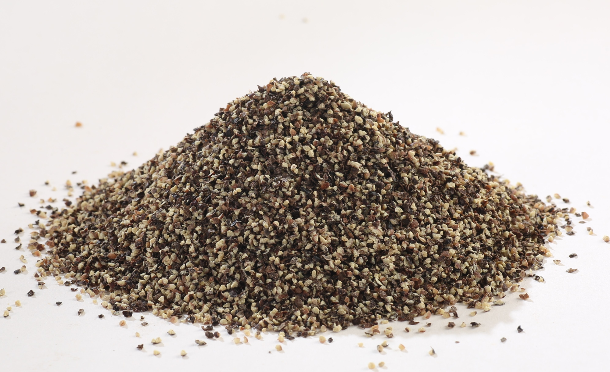

Trở về trang chủ
Công thức pasta cua và bơ tỏi
Công thức của web Food and Wine
Nguyên liệu
-
2 con cua Dungeness tươi (1 1/2 pound) hoặc 1 1/3 cốc thịt cua cục
- 1/2 cốc bơ nhạt cộng với 2 thìa bơ nhạt cắt khối, chia đều
- 1/2 cốc tỏi băm nhỏ (khoảng 2 củ )
- 1/4 thìa cà phê hạt nhục đậu khấu tươi xayv
- 1 gói mì ống bucatini khô (12 ounce)
- 2 thìa nước mắm (không chắc)
- 1 thìa cà phê giấm gạo
-
3/4 thìa cà phê hạt tiêu đen

Hướng dẫn
-
Nếu dùng thịt cua cục, hãy chuyển sang bước 2. Đối với cua tươi, đặt
xửng hấp vào nồi lớn; đổ nước vào nồi cho đến khi mực nước chỉ thấp
hơn đáy xửng hấp khoảng 2.5cm đến 5cm. Đun sôi ở lửa lớn. Cho cua vào;
đậy nắp và hấp cho đến khi vỏ cua chuyển sang màu cam sáng, khoảng 18
đến 20 phút. Đổ đầy đá và nước vào một bát lớn. Để cua nguội trong
nước đá 10 phút. Vớt thịt cua ra. Cho 1 1/3 cốc thịt cua vào bát; để
riêng. (Phần thịt cua còn lại giữ lại để dùng cho lần sau.)
-
Đun chảy 1/2 cốc bơ trong chảo cỡ vừa ở lửa nhỏ. Cho thịt cua vào bơ
trong chảo; đun nhỏ lửa, khuấy thường xuyên. Thêm tỏi; tăng lửa lên
mức trung bình-cao và nấu, khuấy đều, trong khoảng 2 phút. Cho nhục
đậu khấu vào; đổ hỗn hợp cua vào một bát nhỏ.
-
Nấu bucatini theo hướng dẫn trên bao bì để đạt độ al dente(chín tới).
Trong khi đó, đun nóng nước mắm, giấm và hạt tiêu trong chảo lớn ở lửa
vừa. Thêm 1/2 cốc hỗn hợp cua đã để riêng vào, vừa nấu vừa khuấy đều
cho đến khi nước sốt sôi liu riu. Tắt bếp.
-
Chắt bỏ nước luộc mì; giữ lại 3 thìa canh nước luộc mì. Cho mì
Bucatini và nước luộc mì đã giữ lại vào chảo; nấu ở lửa vừa, khuấy
liên tục trong 1 phút. Tắt bếp. Cho 2 thìa canh bơ còn lại vào khuấy
đều cho đến khi tan chảy. Cho phần hỗn hợp cua còn lại vào.
Về công thức này
Mì cua tỏi là một món ăn Việt Nam được yêu thích tại Vùng Vịnh California,
một vùng đất màu mỡ của cua Dungeness . Trong phiên bản của mình, đầu bếp
kiêm tác giả sách dạy nấu ăn Diệp Trần đã thêm nước mắm để tăng thêm vị
umami trong nước sốt bơ tỏi đặc trưng của món bucatini. Kết quả là một
loại nước sốt đậm đà và thơm ngon tuyệt vời, phủ lên mì al dente và thịt
cua ngọt mềm.